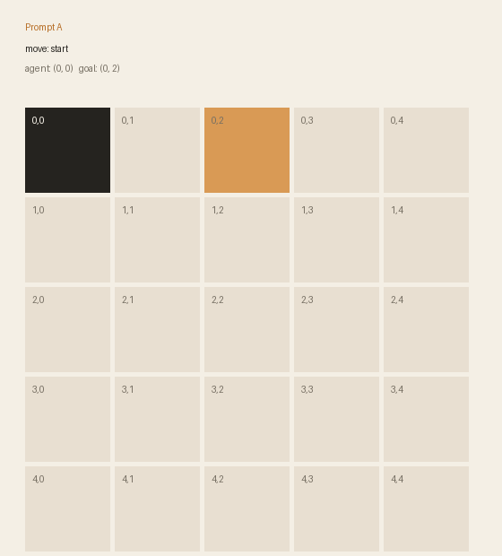
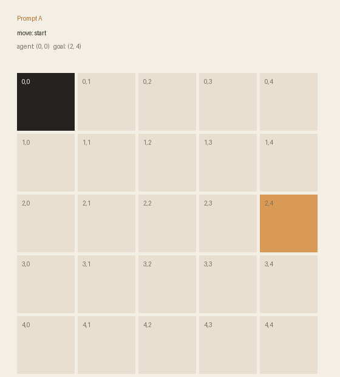
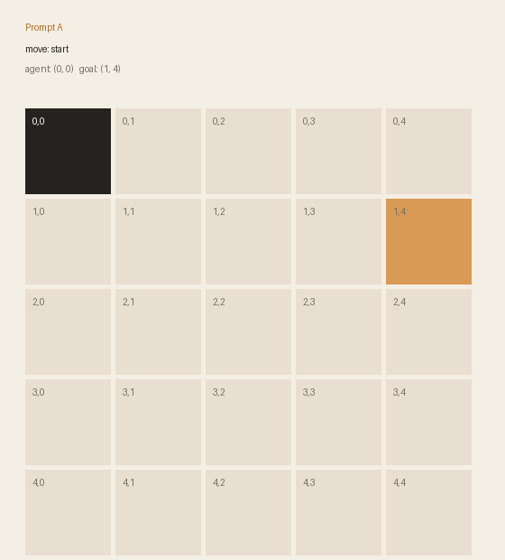
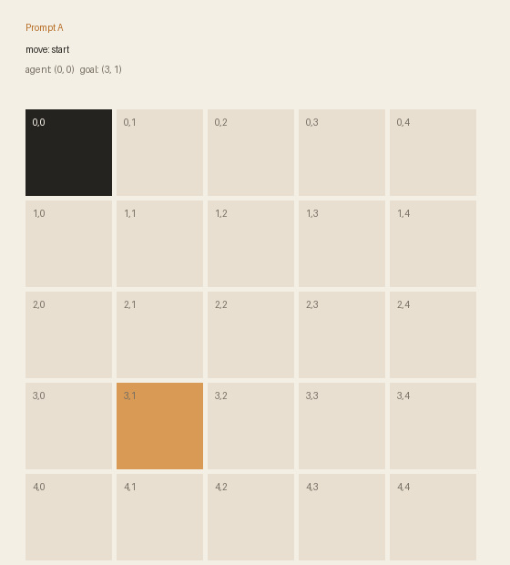
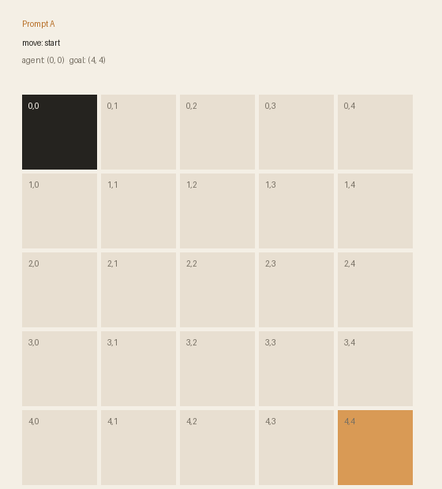
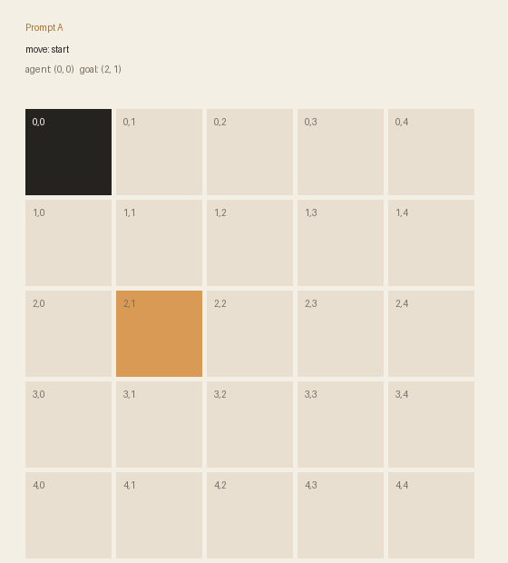

codex · baseline3/6 solved · 43 callsMemory: noneEpisode 1 · 8 calls · not solvedEpisode 2 · 6 calls · solvedEpisode 3 · 5 calls · solvedEpisode 4 · 8 calls · not solvedEpisode 5 · 8 calls · solvedEpisode 6 · 8 calls · not solved
codex · memory2/6 solved · 37 callsMemory: [0, 2], [2, 1]Episode 1 · 2 calls · solvedEpisode 2 · 8 calls · not solvedEpisode 3 · 8 calls · not solvedEpisode 4 · 8 calls · not solvedEpisode 5 · 8 calls · not solvedEpisode 6 · 3 calls · solved